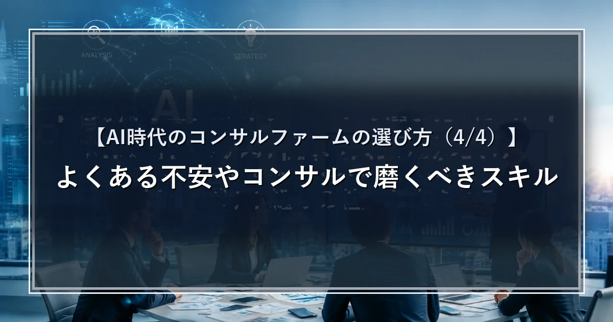

【AI時代のコンサルファームの選び方（4/4）】よくある不安やコンサルで磨くべきスキル

はじめに
本シリーズでは、なぜコンサル業界がAI活用で先行するのか（第1回）、AIがコンサルの仕事をどう変えるのか（第2回）、そしてAI時代に先頭を走るファームはどこか（第3回）を見てきました。最終回となる本記事で正面から取り上げるのは、求職者の方から最も多くいただく問いです——「AIがすべてを塗り替えていく時代に、コンサルと事業会社、どちらが明るいキャリアにつながるのか」。私たちステラキャリアズの結論を、理由とともにお伝えします。
※記載の社名・数値・各社の状況は執筆時点の情報・見解に基づくものであり、最新の状況とは異なる場合があります。
よくある不安：コンサルは「APIを運ぶだけ」になるのか
求職者の方から、こんな不安をよくいただきます。「いまのコンサルは、AIのAPIを運んで導入しているだけ、という批判も聞く。OpenAIやAnthropic自身が導入しやすい仕組みを出したら、仲介役のコンサルの立ち位置はどこになるのか」。
実際、AI開発企業がコンサルタントを大量に採用し、自ら導入支援に踏み込む動きはニュースにもなっています。では、コンサルファームは要らなくなるのでしょうか。
結論：まずはコンサルで「AIを使いこなす力」を身につけよ
私たちステラキャリアズの結論は明快です。「目先のキャリアでいえば、まずはコンサルファーム」。理由はこうです。AI時代に本当に必要な能力は「AIを応用する力」。ファーム自体の有利・不利には押し引きがあっても、その力を最も身につけられる場所に行くことのほうが、はるかに重要だと考えています。コンサルで、かつAIを使いこなす能力さえ持っていれば、いざとなれば開発側・事業会社側に移る選択肢も開けます。逆は必ずしも成り立ちません。
事業会社のリスク（短期）：最先端に「触れ続けられない」
事業会社にもAI部署はあります。しかし、まずそこに配属される確率自体が低い。仮に入れても、立ち位置は「コンサルの助言を受けて社内で実装する側」になりがちです。
さらに、何万人規模の会社では部署によってAIの進捗がまったく違い、2〜3年ごとにローテーションがあります。日系企業の多くはジェネラリストとして育成する方針のため、最先端の部署に入れても、数年後には別の部署に異動になるかもしれない。最先端に触れ続けられる保証がないのです。第1回で見たとおり、コンサルは構造的にAIを使い切る動機が働く現場であり、最先端に身を置き続けやすいという違いがあります。
事業会社のリスク（長期）：会社を離れたとき、何が残るか
もう一つ、長期で効いてくるのが「会社を離れたとき何が残るか」です。事業会社で長く評価されるスキルの多くは、その会社固有のもの——「あの部長に顔が利く」「あの取引先と話せるのは自分だけ」といった、社内政治や人脈に紐づく価値です。これは強力ですが、ある日会社を離れた瞬間に一気に手放すことになります。
一方コンサルは、アップ・オア・アウトやAIによる人員減といったリスクはあっても、課題解決能力や複数業界を見てきた広範なドメイン知識など、より汎用的でアピールしやすいスキルが40代・50代になっても残ります。変化のスピードが速い時代に、どの会社でも持ち運べる武器を蓄えられるのはどちらか——という視点です。
では、コンサルで何を磨くべきか——「レビュー力」と「テイスト」
では、コンサルの中で何を磨くべきか。第2回で「人が残る領域」として挙げたとおり、資料作成のような作業はAIに任せ、人はより戦略的なワークに時間を使えるようになります。そこで決定的に効いてくるのが、AIの出力を評価する「レビュー力」です。戦略的思考力が低ければ、AIの答えを鵜呑みにしてしまう。AIが出したものを批判的に検討し、その先の付加価値を生み出せるかどうかが、価値の分かれ目になります。
ここで私たちがよく使う言葉が「テイスト」です。技術や知識そのものより、「何が良くて何が悪いか、何に価値があるか」を判断できる“OS”を自分の頭の中に作れるか。それが、誰にも代替されない価値の源泉になっていきます。
まずはコンサルでAIを徹底的に使いこなし、レビュー力とテイストを磨く。そのうえで、自分が社会にどんな価値を生み出したいかに応じて事業会社という選択肢を取る——この順番が、AI時代のキャリアを明るくする、というのが私たちの考えです。なお、これはあくまで一つの考え方であり、最適なキャリアは個々人の志向や状況によって変わります。
まとめ
「コンサルか、事業会社か」。AI時代のこの問いに対する私たちの結論は、「まずはコンサルで“AIを使いこなす力”を身につける」です。AIを応用する力こそが時代を超えて効く武器であり、その力を最も鍛えられる場所がコンサルだからです。事業会社は、最先端に触れ続けられる保証がなく（短期）、会社を離れたときに残るスキルが社内固有になりがち（長期）という構造的なリスクを抱えます。
だからこそ、まずはコンサルでAIを徹底的に使い倒し、AIの出力を超える「レビュー力」と「テイスト」を磨く。そのうえで、自分が生み出したい価値に応じて次の一手——事業会社や開発側——を選ぶ。この順番が、変化の速い時代に持ち運べるキャリアをつくる、というのが本シリーズを通じた私たちの結論です。
さいごに
ステラキャリアズでは、元外資系コンサルファーム・元デロイトをはじめとするコンサル出身者が、あなたの志向や強みに合わせてキャリア戦略の設計から転職支援までを一貫してサポートしています。
✓コンサル転職を目指している方
✓AI時代を見据えてキャリア戦略を立てたい方
✓キャリアの次の一手に戦略を持ちたい方
そんな方は、ぜひステラキャリアズのLINE公式アカウントにご登録ください。
限定コンテンツの配信やキャリア相談も受け付けています。
Back to top